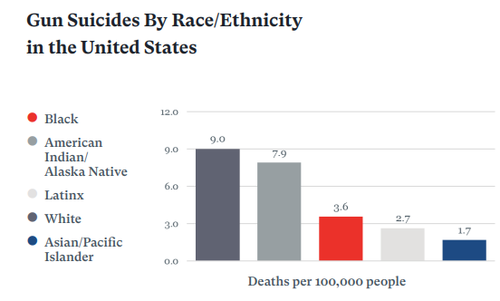
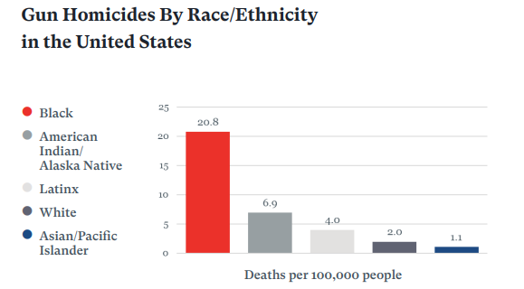

On average, 23,891 people in the United States die per year because of gun suicides and 2,294 are wounded by gun suicide attempts-a rate of 6.9 suicides and 0.7 suicide attempts per 100,000 people. In the United States, white people are 3 times more likely than Black people to die by gun suicide
Every year, an average of 15,889 people in the United States die by gun homicide and 29,934 are wounded by gun assaults-a rate of 5.1 homicides and 9.1 assaults per 100,000 people. Of all homicides in the United States, 76% involve a gun. In the United States, Black people are 10 times more likely than white people to die by gun homicide
